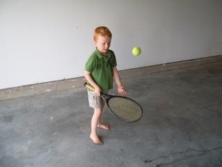
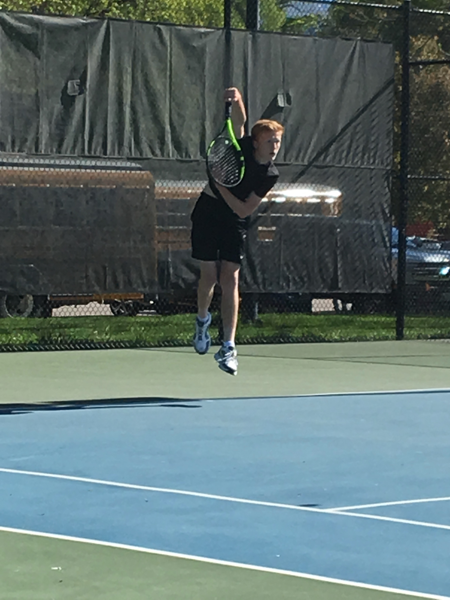
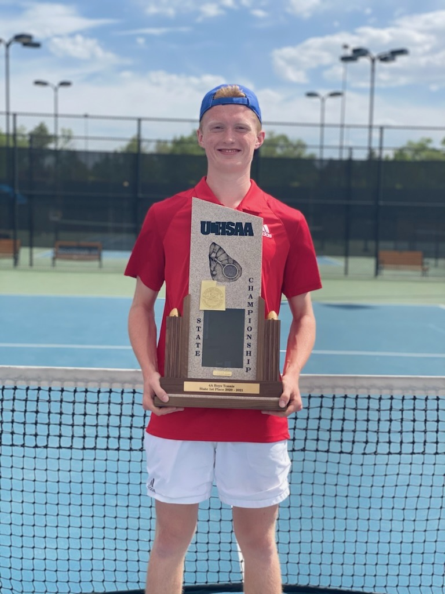

My Tennis Journey
Discovery and Love
Making the High School Team
Team Member → Captian → Champion
My journey started young. My grandma taught me how to bounce a tennis ball on a racket when I was about 6 years old. I got pretty good. I had always loved sports and balls so this new ability entralled me. My mom got me into a few summer tennis camps near our home in Lawrence, Kansas. The real start to my love for tennis came when my grandma got me my first tennis racket.

At the age of 10, my family moved from Kansas to St. George, Utah. This would become my home until I graduated from high school 9 years later. Little did my parents know that this move, in terms of my tennis playing, was a great career move. St. George is a hot, dry desert, and it is possible to play tennis year-round if you are committed, which I was. I took lessons from a local athletic club until I entered middle school and then switched to a country club near my school. I would spend a third of my free time at this country club over the next several years. I left all other sports behind in my first year of high school. For a while, I played soccer and tennis in tandem, but because both sports were at the same time of year at my high school, I was forced to choose. Banking on tennis being a niche sport, I tried out for the team. I didn't know that they accepted everyone, but because I could tell I would be one of the better kids on the team, I stayed. After making junior varsity my freshman year I knew I had found my sport.
For the next two years of high school tennis, I worked my way up my teams rankings and eventually landed a spot as the third singles varsity player. At the close of that year I had a decision to make. My neighborhood was getting rezoned into a new high school closer to my home, but the city was giving residents already attending a high school the option to switch or to stay. I chose to switch and start the tennis team at Crimson Cliffs High School. After my junior year getting haulted by COVID-19, Senior year seemed hopeful. My team was filled with promising players and we knew we had a big shot at the title that year. Before the season, I was asked to be a team captain. I was thrilled. As sports go, there were ups and downs but we ended up taking state that year as the first physical mens team to compete out of our new high school. It was the ending to a great story, but only the beginning of my love for this sport. Today I still play when I can and I am an avid viewer of all the professional tournaments. I often reflect on simpler days when tennis was all I had to care about.
Want to learn more about Tennis? Watch this video!
">
Curious about the best tennis players in History?
Play around with this graphic and see if you recognize any famous names!